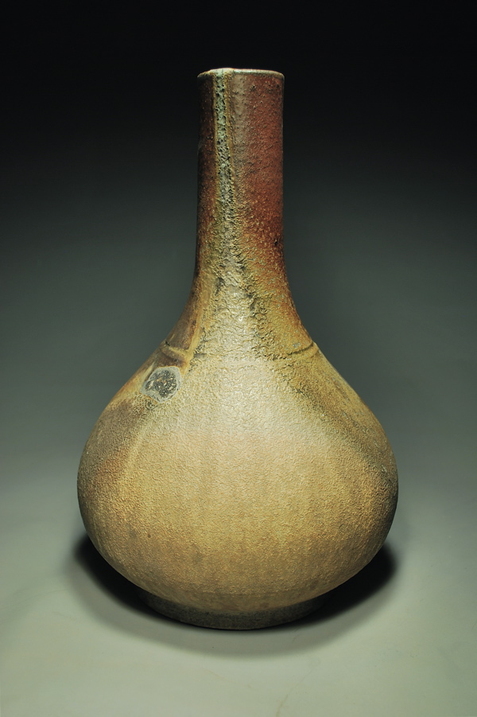
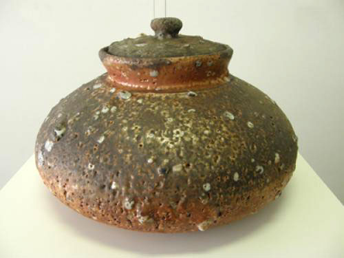
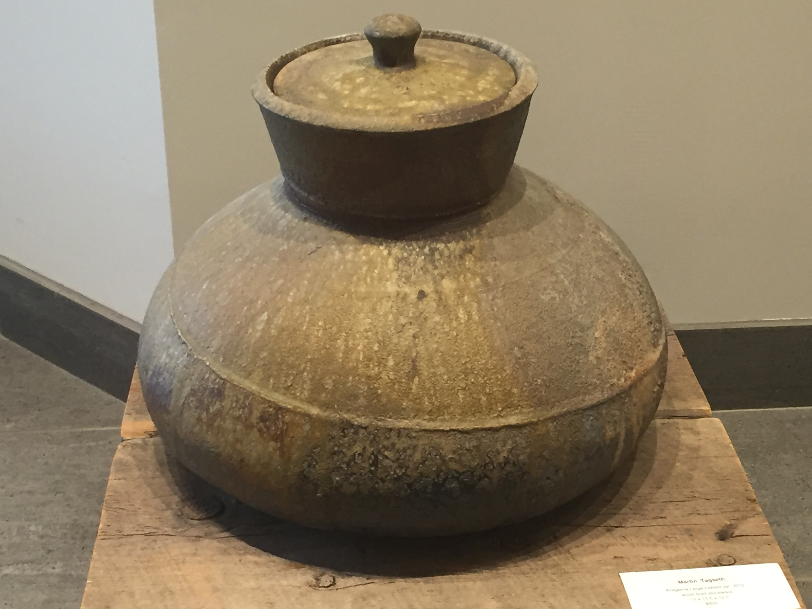
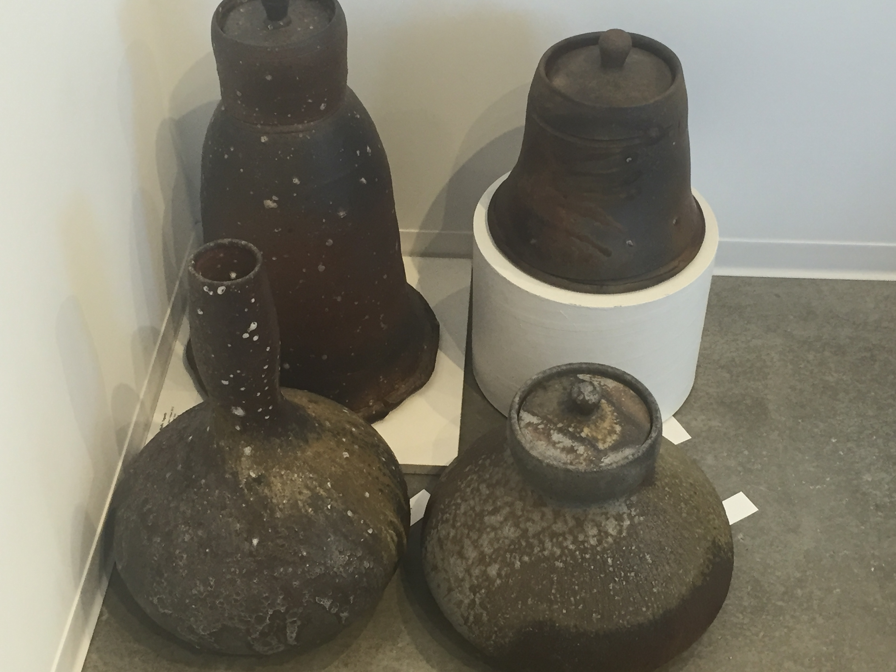
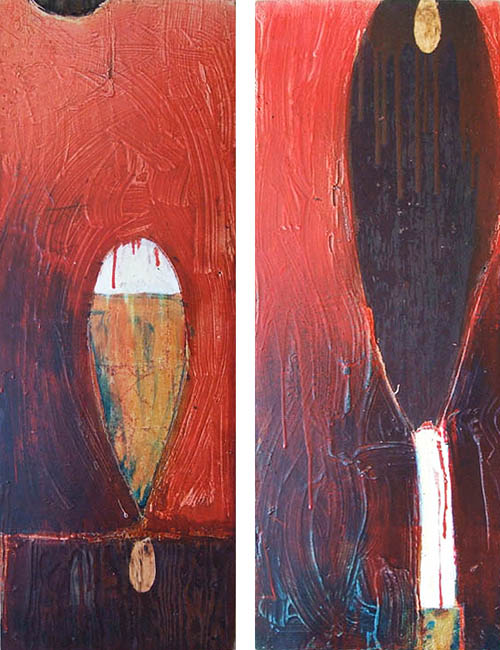
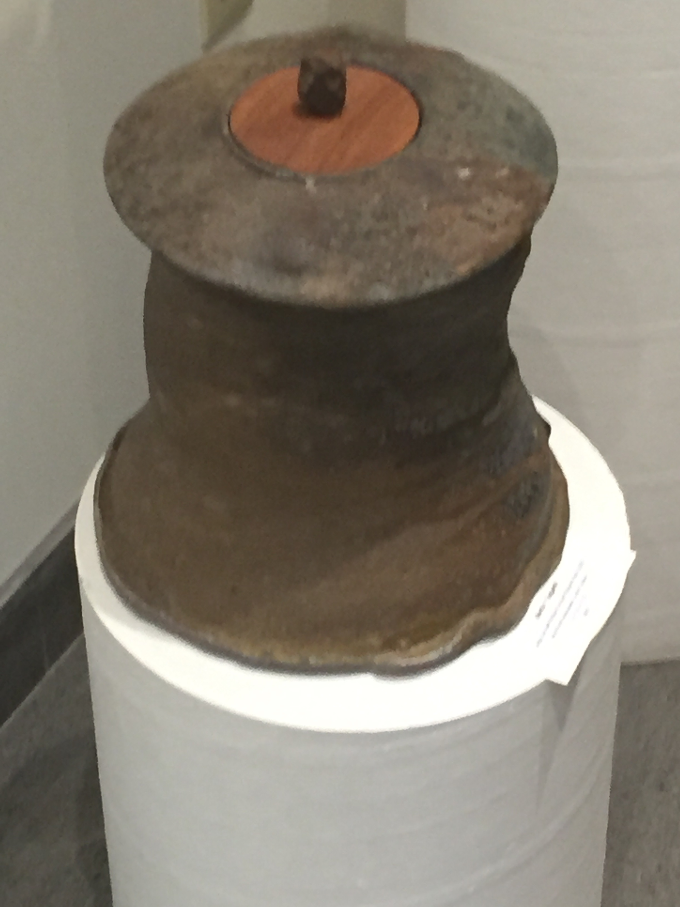

Martin Tagseth is a potter who specializes in Shigaraki-style pottery. He uses feldspar which he gets from Manitoba to produce white speckles in his pieces.
He was born in Humboldt, Saskatchewan, in the year 1963. He has recieved a Fine Arts Diploma in Red Deer, Alberta; a Bachelor of Fine Arts in Halifax, Nova Scotia; a Master's Exchange in Bergen, Norway; and a Master of Fine Arts in Columbus, Ohio. Since then, he has spent many years teaching around the United States and Canada, and is currently an adjunct professor at the University of Regina. He has recieved a number of awards for his pottery, including the Award for Excellence in Clay in 2015.
As mentioned, Martin Tagseth focuses on Shigaraki-style pottery, which is based on the pottery and stoneware originally made in and around the Shigaraki-area, in Japan. Tagseth clearly enjoys the style, as even his painting, 'Tsubo', is of a Shigaraki-style pot. According to Tagseth himself, his art uses 'the relationship between storage/architecture, and the notion of decoration/surface' as ways to build upon an objects purpose.
Lidded Jar
Song Form #42
Covered Jar
Anagama Large Lidded Jar
Top:Chunky Dark Lidded Vessel, Rusty Lidded Jar
Bottom:Choson Vase #138, Lidded Jar #49
Tagseth's painting, Tsubo
Click to see the painting folded together
Large Jar with Wood Lid and Stone Knob
Created by Bennett Eidsness 2016.